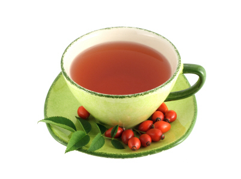

Breast Milk Production: Tried and True Secrets to Kick Up Your Supply
{Photo by snaulkter}
Many mothers worry about their breast milk production. Will I have enough milk to satisfy my infant without supplementing with formula?
In most mothers, the answer is yes. In some mothers, the answer is yes...with some help. And in a few mothers, the answer is no...but a doctor
can help.
If you're worried you may be in the second category of milk supply, there are many simple things you can do to help yourself. From herbal teas
to sleeping positions, you're bound to find something that works for you.
And if you're in that last category? Well, there's hope for you to. Breeze through this list of breast-milk-inhibitors, and then set up an
appointment to talk things over with your doctor.
So first, that relaxing mother's brew tea.
Start with the Herbal Approach
Are herbs Greek to you? Well, fenugreek is a very old herb and worth a try. It is easy to obtain and inexpensive. Used properly it is often
an effective method to increasing breast milk. Most people who take fenugreek see an increase in milk production within 2-4 days.
Fenugreek can then be discontinued once your milk supply is stimulated to a target level. Generally, the milk production is then maintained
as long as you are nursing fairly often and emptying both sides. Be cautious if you are diabetic, the herb can lower blood glucose levels.
Women with asthma should also be aware of a possible increase in asthmatic symptoms.

Homemade Mama's Milk Tea for Increasing Breast Milk
Here is a simple recipe for making your own tea at home to help increase your breast milk production. Combine all the herbs and store in an
air-tight container until you're ready to steep.
Teas are generally considered less potent than capsules. If you are going hard core for an increase in breast milk production, you may want to pick
up fenugreek in the capsule form and take it with your daily vitamins.
Other Secrets to Increasing Your Breast Milk Supply
Besides sipping tea, there are some other things you can do to help increase your breast milk production.
As a general rule, eat well. Apricots, asparagus, green beans, sweet potatoes, pecans, and all leafy greens are considered
helpful in increasing and sustaining breast milk.
Pump your milk every two hours for a day or two. This drastically increased my supply!
Consider co-sleeping. Maybe if you are near your baby you would put her to your breast more which may increase your breast
milk. The more times you nurse (or attempt to) the more times your body is stimulated to produce breast milk. However, if you do decide
to co-sleep, do it safely! Look at buying a co-sleeping pad
(like this one from Bean Products)
or a snuggle nest (like this one from the First Years.).
Empty both sides each time you nurse.
Empty both breasts in the shower. (You will have to learn to do this by hand. Not so hard really.) This will increase the
frequency by prompting your body to make more milk.
Nurse your baby to sleep a few times. Babies nurse while they sleep. This is a great bonding time and your baby will empty
you out. When they wake, give them the other side. More nursing means more milk!
In most cases, women struggle with their breastmilk supply because they have not been nursing enough. The breasts function off a simple supply-and-demand
formula. The more you nurse, the more you have to nurse.
It is very rare for a woman to have a medical or physical reason their milk supply
is low. However, rare does not mean never! Here are some of those occasional reasons that can affect breast milk production.
Little or no breast changes during pregnancy can sometimes indicate that there are fewer milk-making glands present than in normal breasts.
Mothers with this condition can still breastfeed, but they may need to use a supplemental nurser
to deliver extra milk.
If you have had a breast reduction or augmentation surgery, you may experience production issues. In any surgery where there is
an incision around the areola, there is a risk that the milk ducts in the breast could be severed. This will interfere with milk drainage and
disrupt the nerves running between the nipple and areola.
Specific hormonal imbalances. Some simple testing and a conversation with your doctor can eliminate this problem.
Experiencing a severe (shock-producing) hemorrhage after delivery can affect the pituitary gland's ability to secrete the hormones
necessary for lactation. In these instances, sometimes hormone replacement can help.
If not all the placenta was delivered, it may allow the continued secretion of placental hormones (like progesterone) that can
block initial lactation from occurring. Removal of these fragments will help your hormones adjust.
Let-down or milk-ejection problems. If your breasts cannot release their milk, the back up will signal your breasts to slow down
and eventually stop producing. Let-down can be inhibited by a pituitary tumor, surgery around the areola, severe pain, embarrassment, severe emotional
stress, smoking, or high levels of alcohol. In most cases, correcting these behaviors will help. In others, medication can help.
A superimposed pregnancy, some medications, excessive fluid intake, some illnesses, less than an 18 pound pregnancy weight gain,
and taking high-estrogen oral contraceptives immediately and up to 6 weeks after birth can all lead to breast milk production issues.
Many women have struggled with their breast milk production - the good news is that kicking it up a notch (thank you Emeril) is not that hard
to do.
A simple cup of tea, a few new good habits, and you'll be swimming in extra milk you can freeze for later or sell for others.